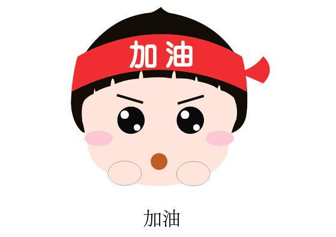

日记 日记才刚刚开始... 感到孤单 每个人都有孤单的时候，你感到孤单的时候是在哪个瞬间？ 今天朋友返校答辩了 感觉家里就剩我自己一样 特别孤单呢 那就努力学习吧 争取一年后... 不,应该是半年后的考研 能有一个理想的成绩 加油！！  母亲节 母亲节这天家里增添了一点点点缀，心情真的很好 母亲节那天因为零用钱提前预支已经没钱了 载着弟弟到花店给妈妈买了两朵花 妈妈很开心 说已经很久没有收到鲜花 因为家庭条件的原因，平时买东西送礼物 都是买一些务实的东西 我们家基本很少见这种鲜花 妈妈找了几个好看的酒瓶——充做花瓶 把花插了起来放在屋里当做点缀 心情愉悦！！